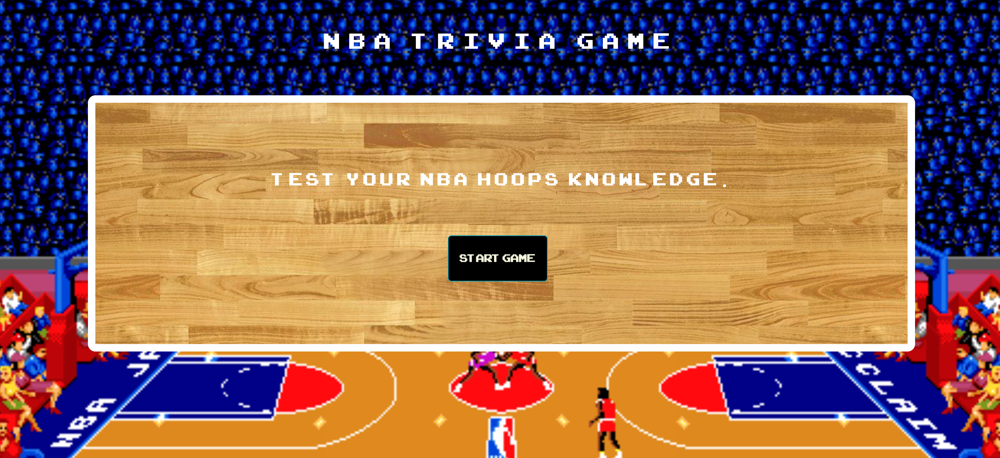

RESUME | Right Click to Save

Education
Bachelor of Arts | Lewis & Clark College | 2010
- Major in Philosophy
- Minor in Religious Studies
- Study Abroad Program in East Africa (Kenya & Tanzania), Fall 2008
- Member of Peer Review Authority, Student Conduct Board
- Writer, Pio Log, Lewis & Clark College's student run newspaper
Master of Arts in Religion | Yale Divinity School | 2016
- Coursework in Religion and Literature with focus on Narrative Studies
- Supplemental Coursework in Managing Social Enterprises at Yale School of Management
- Supplemental Coursework in Community Policing Reform with New Haven Police Department Chief of Police Tony Campbell
Professional Certificate in Full Stack Web Development | George Washington Unviversity | 2019
- Frontend
- HTML5
- CSS3
- Bootstrap
- Handlebars.js
- Backend
- Java Script
- jQuery
- Node.js
- Express
- React.js
- Database
- Firebase
- MySQL
- MongoDB
Employment History
Manager & Bartender | Bardo Brewing | April 2018 - November 2019
- Bartender and Staff Manager responsible for overseeing all customer-facing concerns
Faithful Voter Assistant | Faith in Public Life | October 2018 - November 2018
- Supported Campaign Manager and Managed Temporary Employees
- Voter Engagement Campaigns
- Faithful Voter Campaigns in Ohio and Georgia aimed at increasing voter turnout and boosting voter engagement amongst persons of faith
- Votante Fiel in Virginia aimed at increasing voter tunrout amongst Hispanic and Latinx Voters
Communications Assistant | Faith in Public Life | June 2018 - August 2018
- Supported Communications Director with traditional press duties
- Compiled Press Clips
- Monitored Media Mentions
- Pitched Media Organizations
- Wrote and Edited Media Advisories, Press Releases, Op-Eds
- Event Planning
- Women of Faith Cry out for Justice
Program Fellow | Faith & Politics Institute | September 2016 - October 2017
- Event Planning/Program Building
- 2017 Bipartisan Congressional Civil Rights Pilgrimage to Alabama with John Lewis (GA-05), Steny Hoyer (MD-06), Terri Sewell (AL-07), Martha Roby (AL-02), Keith Ellison (MN-05), and Ted Deutch (FL-22)
- Senate Chiefs of Staff Dinners
- Congressional Book Discussion and Panel with Sam Quinones and his book Dreamland
- Congression Book Discussion and Panel with Ronald C. White Jr.'s Lincoln's Greatest Speech: the Second Inaugural featuring Will Hurd (TX-23)
- Stakeholder Outreach
- Colleges & Universities
- Museums
- Churches & Church Communities
- Congressional Offices
- Writing/Editing
- Program Proposals
- Research
- Congressional Outreach Letters
- Executive Report Summaries
- Program Scripts
- Talking Points
- Introductory Speeches
- Biographical Briefs
Field Volunteer | Hillary for American Campaign | August 2016 - September 2016
- Supported Field Director in Henrico County, Virginia (Richmond)
- Phone banking, Voter Registration, Canvassing, and Volunteer Management
Associate | Kimball Stroud & Associates | June 2016 - August 2016
- Organized, planned, and executed events in Washington DC including fundraisers in Philadelpia for the 2016 Democratic National Convention
Program Member | Yale University Institution for Social & Policy Studies | July 2015 - September 2015
- Conducted phone interviews with U.S. based physicians
- Collected information and data regarding American healthcare system
Student Employee | Beinecke Rare Book & Manuscript Archive | August 2014 - February 2016
- Researched, prepared, and cataloged library materials and collections, including the James Weldon Johnson Collection
Student Reporter | Yale Sports Publicity | October 2012 - May 2013
- Covered the Yale Men's Swimming and Diving Team
- Wrote event previews, recaps, and personnel interviews
Analyst & Salesperson | BlitzMetrics | January 2011 - June 2012
- Managed advertisment campaigns on Facebook Ads and Google AdWords
- Project Management
- Served as primary contact between client and other analysts/designers/programmers
- Created, optimized (A/B testing methods), and maintained advertisement accounts
- Responsible for data analysis
- Created and edited Proposals and Scope of Work documents
- Clients included small biz and corporate clients including but not limited to Lane Bryant and Adidas Baseball
Due to privacy concerns references are only available upon request.
PORTFOLIO
NBA History: A timed trivia game testing your knowledge of historical NBA facts.
Giftastic: A Gif Web App that utilizes Giphy's public API

Pettle: A Mockup of an Online Pet Adoption Matching Service

WRITING
Forthcoming.